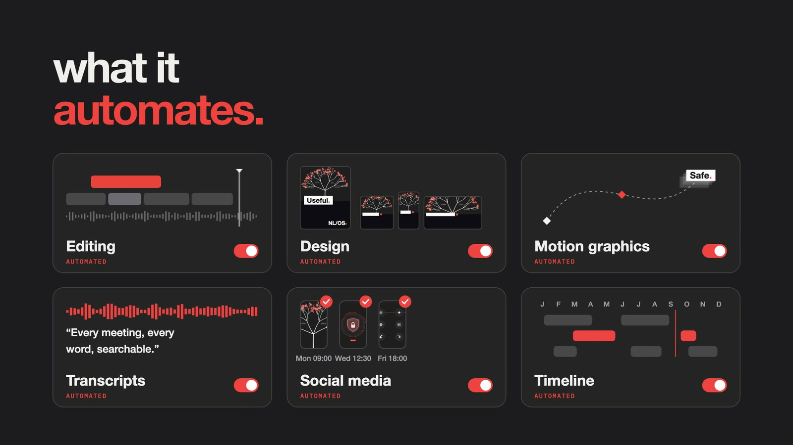
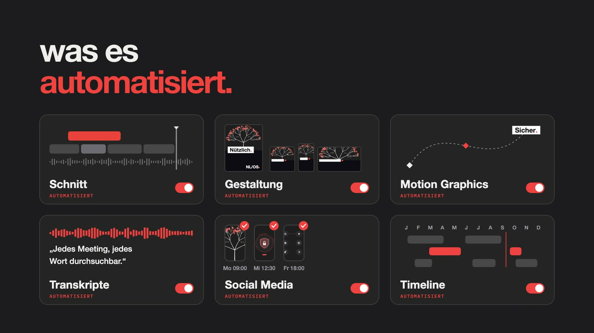
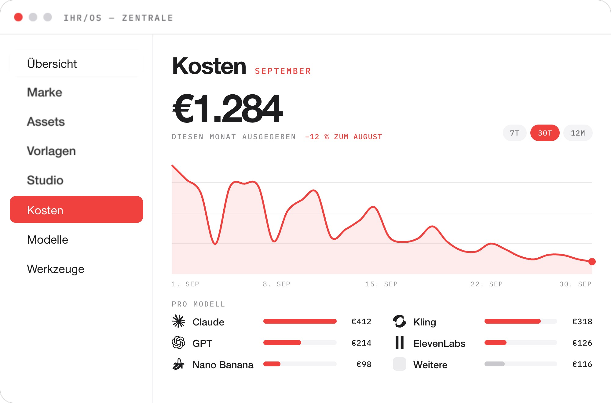
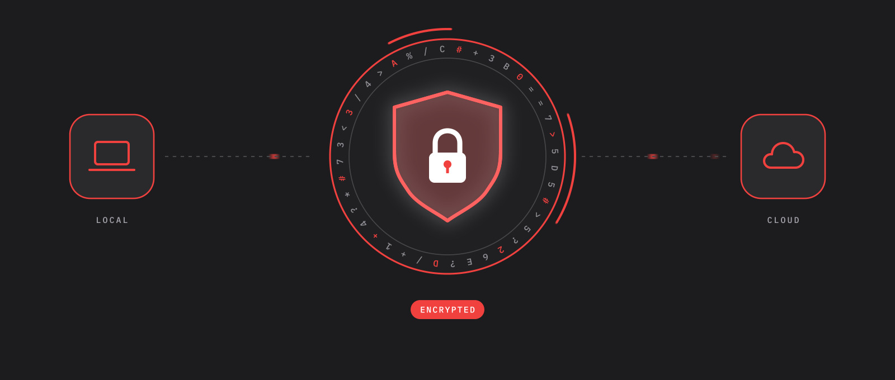
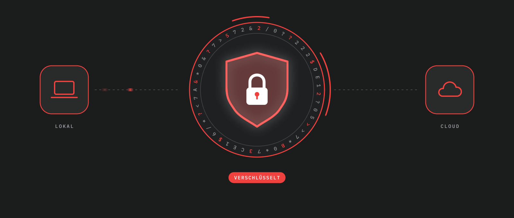
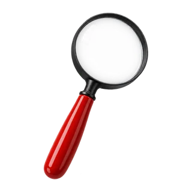
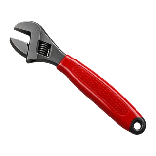

make ai work.
Your own AI operating system: every model and every tool in one place, all costs in view, and everything you make stays in your system.
many tools.
one system.
Every day your company creates knowledge: in briefs and meetings, in research, edits and campaigns. Today it's scattered across inboxes and chats, cloud accounts and a dozen AI tools that don't talk to each other. So I build your own AI operating system. It brings together everything your traditional software and the new AI tools can do.

under the hood
Every model and software you pay for runs under the hood of this system. Your team learns one window and gets all of them.
a sidecar
for everyone.
A small team of specialists runs the system from the control centre and keeps it up to date in the background. Everyone else gets a sidecar: a small app shaped to their role. You write or speak in plain words. The AI does the rest.


all costs
in view.

Every model and every tool is metered the moment it runs. You set the caps, the system holds them: the bill stays flat while usage climbs.
the data tree
of your company.
Everything your company knows grows into one data tree of knowledge: every project, every decision, every file. The models get better every year, even if the provider changes, from closed to open-weights models or vice versa. But the tree stays the same, and every model can keep tending it.
- your data
- your project files
- your decisions
- your brand voice
- your best practices
- your skill files
- your clients
- your workflows
secure
by design.
Encrypted, locally and in the cloud. Everything you make stays in your system, and you decide what leaves it.


what i do
ai operating systems
- Your own AI operating system, with a control centre and a sidecar for everyone → see the system
- Internal tools shaped around how your team already works
production pipelines
- AI image and video pipelines, wired into real post-production
- Built by filmmakers and CGI artists with over 25 years of experience
strategy & training
- Audits, roadmaps and build-vs-buy calls with real numbers
- Hands-on training at the desk, role by role: easy to learn, fun to use
how i work

Phase 01 — 5 daysaudit
Five days with your teams, to see how the work really flows. You get a written brief with the hours and the costs in it.

Phase 02 — 4–8 weeksbuild
Then I build your own AI operating system, in your stack, shipped in weekly increments you can veto.
train
I train your people, easy to learn, fun to use, document everything and step back. Optional retainer as the models change.